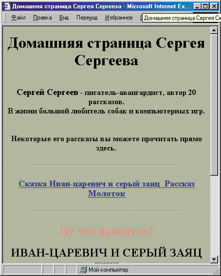

|
|
|
|
Использование других свойств при работе с текстом
Помимо рассмотренного здесь свойства innerHTML, каждый элемент веб страницы имеет еще три похожих свойства:
• innerText — то же, что и innerHTML, однако не может содержать HTML теги;
• outerHTML — то же, что и innerHTML, но включает в себя открывающий и закрывающий теги данного элемента, а также вложенные элементы:
• и, наконец, outerText — то же, что и outerHTML, однако не может содер жать HTML-tens..
Другими словами, свойства innerText и innerHTML каждого элемента содер жат только внутренний текст этого элемента, а свойства outerText и outerHTM L — весь текст элемента, включая вложенные элементы и теги самого элемента. При этом innerText и outerText не содержат HTML.-форматирования, innerHTML и outerHTML могут его содержать. Из всех этих свойств у начина ющих обычно вызывает вопросы только outerText. Однако оно используется довольно редко. Изменив его, можно практически убрать со страницы весь элемент.
Кроме того, существуют удобные методы для вставки текста и HTML-sop,” на страницу. Они называются insertAdjacentText и insertAdjacentHTML. Давайте рассмотрим такой пример. Допустим, мы хотим, чтобы на “домашней странице Сергея Сергеева” через минуту после нажатия на любую из наших мнимых “гиперссылок” и, соответственно, отображения текста одного из рассказов, перед ним появлялась красная надпись “Ну что, нравится?”
Потом к ней можно еще добавить разные кнопки типа ДА, НЕТ, НЕ ОЧЕНЬ
И связать с ними еще какие-либо действия, например, никогда больше не отображать рассказ, который не понравился. Однако сейчас давайте добавим только надпись.
Добавление дополнительных надписей
Для этого можно сделать следующее. Определим соответствующий стиль.
Н3 { text-align: center; color: red; }
В нашем примере для запроса к пользователю мы используем тег <НЗ>. После этого вставим нашу надпись таким образом:
document.all.rasskaz.insertAdjacentHTML("AfterBegin", '<H3>Hy что, нравится?<НЗ>');
Здесь используется метод insertAdjacentHTML, что позволяет вставлять не только текст, но и HTML-тети. Аргумент AfterBegin означает, что вставля-емый код будет помещен в начало блока <DIV ID='rasskaz'> . Если бы мы напи-сали BeforeEnd, то код был бы вставлен в конец блока. Кстати, методы lnsertAdjacentText и insertAdjacentHTML позволяют вставить текст (и HTML-код) не только внутрь какого-либо элемента, но и непосредственно перед и им или после него! Для этого используются аргументы BeforeBegin и, соответственно, AfterEnd. Как вы уже поняли, в качестве второго аргумента используется строка с текстом или HTML-кодом, который надо вставить.
Остальное уже просто. Добавим в каждую функцию отображения текста при введенную выше строку в сочетании с установкой таймера — setTimeout:
setTimeout("document.all.rasskaz.insertAdjacentHTML ('AfterBegin','<H3>Hy что, нравится?<НЗ>') ", "60000");
Правда, это еще не все. Если оставить страницу в таком виде, то таймер включит метод добавления текста через минуту после щелчка на мнимой гипересылке, даже если пользователь за это время успеет щелкнуть на другой, а это нами не задумывалось. Поэтому во время щелчка на каждой мнимой гиперссылке следует останавливать предыдущий таймер. Для этого достаточно определить глобальную переменную:
var timer; И присвоить ей значение запущенного таймера:
time=setTimeout("document.all.rasskaz.insertAdjacentHTML ('AfterBegin','<H3>Hy что, нравится?<НЗ>') ", "60000");
Тогда для его остановки достаточно будет написать следующее:
clearTimeout(timer); В тот момент таймер будет остановлен.
И так давайте еще раз посмотрим на текст получившейся страницы. В ней использована одна функция show() для отображения любого из текстов. Обратите внимание на то, что при ее написании использован тот факт, что имя переменной, содержащей текст каждого рассказа, если к нему приба- вить окончание Ink, совпадает с именем соответствующей мнимой гипер- ссылки. Подобный разумный выбор имен позволяет передавать функции не два параметра (ivanink и ivan), а только один, что экономит время и ресурсы компьютера. В данном случае это не столь существенно, поскольку раз мер страницы невелик, но в некоторых случаях может сыграть большую роль.
<!DOCTYPE HTML PUBLIC "-//W3C//DTD HTML 4.0 Transitional//EN">
<HTML>
<HEAD>
<ТITLЕ>Домашняя страница Сергея Сергеева.</TITLE>
<STYLE>
<!--
BODY { background-color: #BABAAO;
color: rgb(29,29,24); } H1,H2 { text-align: center;
} H3 { text-align: center; color: red;
} .Ink { color: #634438;
text-decoration: underline;
cursor: hand;
} .Ink0 { color: rgb(29,29,24);
text-decoration: none;
cursor: default;
} HR { margin-top: 24px;
width: 75%;
DIV.epig { text-align: justify; font-size: smaller;
width: 130;
} DIV.pdps { font-style: italic;
text-align: right;
} DIV.ab { text-align: justify; text-indent: 2em; }
-->
</STYLE>
<SCRIPT LANGUAGE="JavaScript" TYPE="text/javascript">
<!--var oldlnk="ivanlnk";
var timer;
var hammer”'
<H2>MOЛTOK<BR><SPAN STYLE="font-style: italic; "> paccrap</SPAN></H2>
<DIV STYLE="text-align: right; ">
<DIV CLASS="epig">Mы кузнецы, и дух наш молод.
<DIV CLASS="pdps">(Из песни) </DIV></DIV></DIV> <BR>
<DIV CLASS="ab">Это случилось очень давно, уж и не помню в каком году, в каком веке и в каком тысячелетии... (Здесь располагается текст рассказа) </DIV>' ;
var ivan='<Н2>ИВАН-ЦАРЕВИЧ И СЕРЫЙ ЗАЯЦ<ВR>
<SРАN STYLE="font-style: italic; ">CKА3KА</SPAN></H2><DIV STYLE="text-align: right;"><DIV CLASS="epig">Hy, погоди!..
<DIV CLASS="pdps"> (Из мультфильма) </DIV></DIV> </DIV><BR>
<DIV CLASS="ab">Жил да был Иван-Царевич, и все у него было: и злато-серебро, и невест полный дворец, и книжек много умных, и тренажерный зал огромный. Однако тоскливо было у него на душе -как встанет утром с постели царской, так и начнет горевать, и горюет до вечера.</DIV><DIV CLASS="ab">Дoлгo ли, коротко ли... </DIV>
<DIV CLASS="ab">И они жили долго и счастливо и умерли в один день.</DIV><НR>';
function show(arg)
{ clearTimeout(timer) ;
document.all.rasskaz.innerHTML=eval(arg);
document.all[oldink].className="lnk";
oldlnk=arg+'Ink'; document.all[oldink].className="lnk0";
timer=setTimeout("document.all.rasskaz.insertAdjacentHTML ("AfterBegin",'<H3>Hy что, нравится?<НЗ>') ", "60000");
}
//-->
</SCRIPT>
</HEAD>
<BODY>
<Н1>Домашняя страница Сергея Сергеева</Н1>
<BR>
<DIV STYLE="font-size: larger;">
<SPAN STYLE="font-weight: bold;" Сергей CepreeB</SPAN> — писатель-авангардист, автор 20 рассказов.<BR>
В жизни большой любитель собак и компьютерных игр.
<BR><BR> Некоторые его рассказы вы можете прочитать прямо здесь.</DIV> <HR>
<DIV STYLE="text-align: center;">
<SPAN CLASS="lnk" ID="ivanlnk" onClick="show('ivan')">Сказка «Иван-царевич и серый заяц&гадио;</SPAN>
<SPAN CLASS="lnk" ID="hammerlnk" onClick="show('hammer')">Рассказ «МОЛОTOK»</SPAN> </DIV>
<HR>
<DIV ID="rasskaz"> </DIV>
</BODY>
</HTML>
Как видите, переменная oldink играет здесь еще одну, вспомогательную роль: ей присваивается результат “вычисления” имени мнимой гиперссылки, и она используется при обоих сменах ее стиля. Кроме того, в этом тексте используется функция eval(), которую мы с вами еще не рассматривали:
document.all.rasskaz.innerHTML=eval(arg) ;
Для чего она нужна? Давайте разберемся. Наша функция show() получает аргумент в виде текстовой строки:
onClick="show('ivan')"
Это сделано, чтобы легче было получить имя мнимой гиперссылки, про сто сцепив эту строку со строкой Ink (ivan + Ink = ivanink). Однако если Tenepь написать просто:
document.all.rasskaz.innerHTML=arg;
то содержимое блока <DIV ID='rasskaz'> будет заменено именем переменной. то есть строкой, поступившей в качестве аргумента. Использование функции
eval() здесь позволяет получить ссылку не на имя переменной, а на ее значение,
То, что увидит пользователь, читающий в течение хотя бы минуты один и тот же рассказ на этой странице, изображено на рис. 7.12. Для упражнения попробуйте добавить еще вставку кнопок с вариантами ответа на поставленный вопрос, а также запрет отображения в данном сеансе работы не понравившихся рассказов.

Рис. 7.12. Через минуту после появления текста рассказа возникает красная надпись “Ну что, нравится?”
|
|
|
|